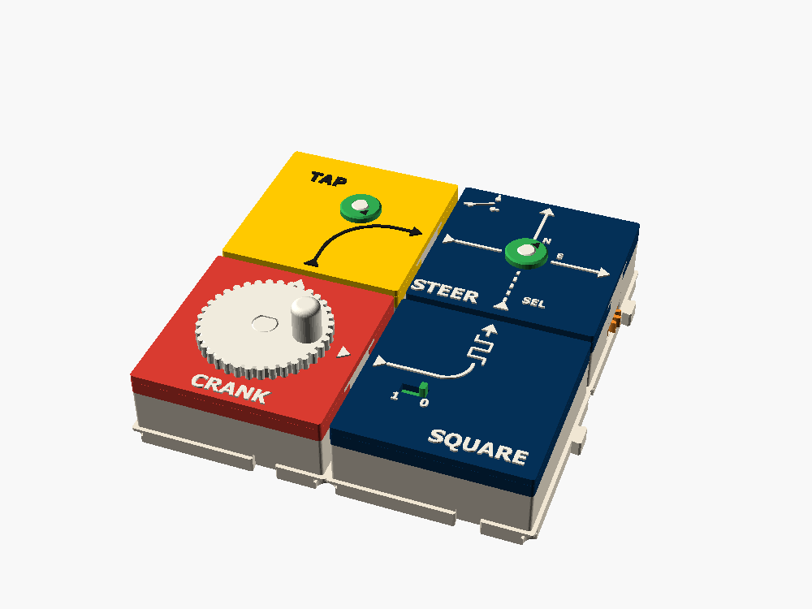
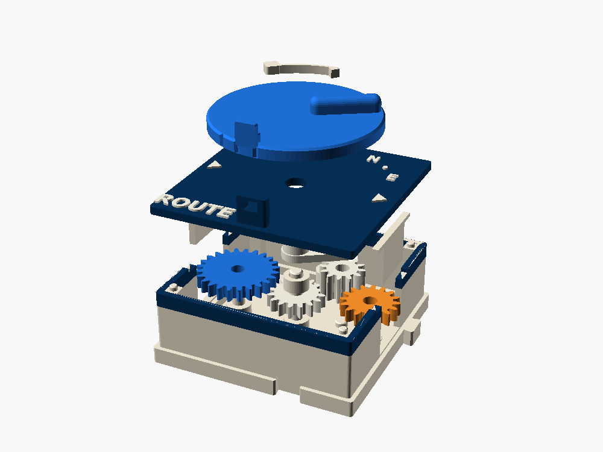
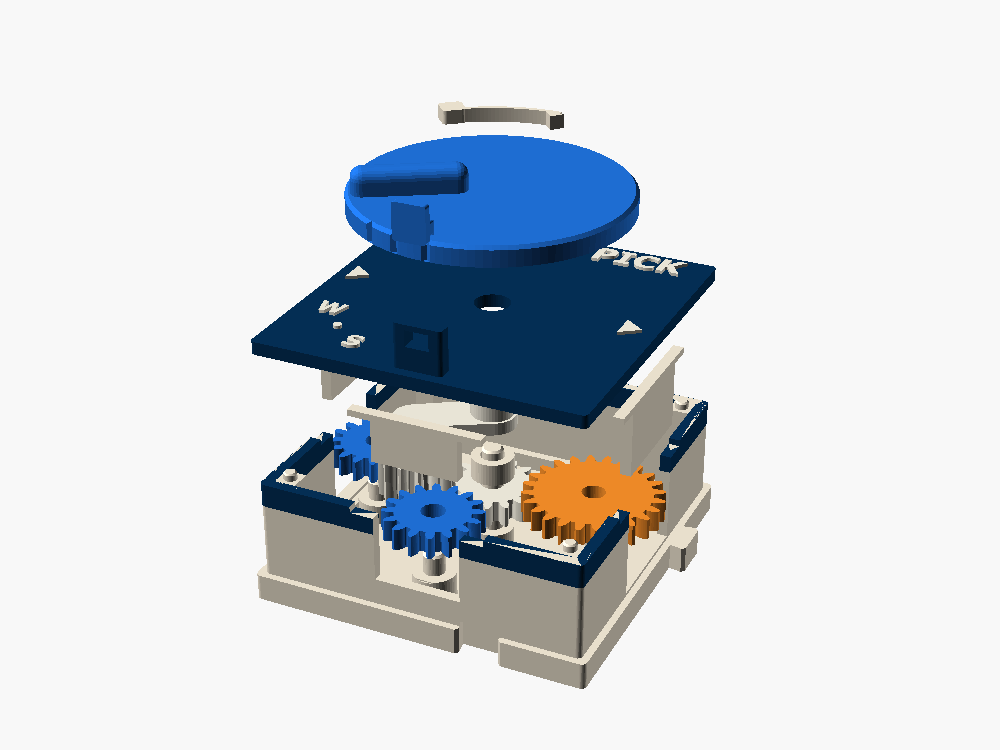
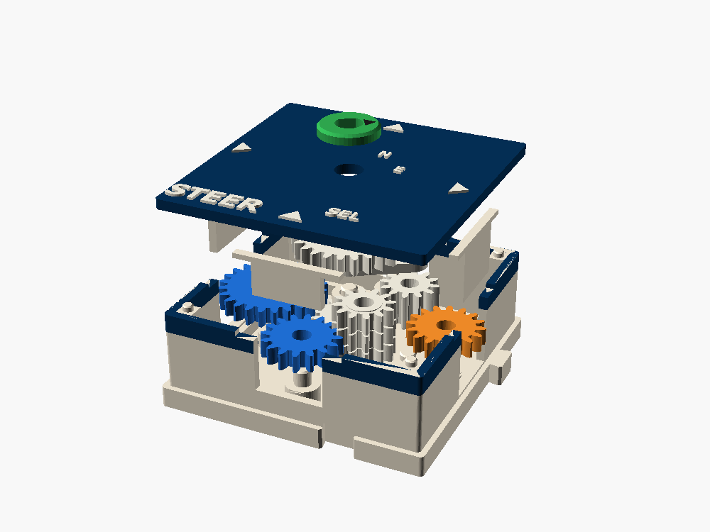

← All gear boxes · family: switches · the clocks that drive them: SQUARE and RAMP
ROUTE · PICK · STEER · SWAP
Switches made of gears. One swinging gear chooses where the line goes: a knob on the lid sets it, or a second line does, or the box flips it every turn on its own.
1 cell each (SWAP 2) · cost 3 · fit-checked, not printed (SWAP is a spec)

Four ways to choose
| Box | Who chooses | Ports | In code | State |
|---|---|---|---|---|
| ROUTE | You, with the knob | W in → E or N | sel ? north(x) : east(x) | fit-checked |
| PICK | You, with the knob | W or S in → E | E = sel ? S : W | fit-checked |
| STEER | A second line on S | W in, S select → E or N | level(S) ? east : north | fit-checked |
| SWAP | The line itself, every turn | W in → E, N, E, N… | state = !state | spec · works today as 4 boxes |
FORK, the random junction, is the fifth member: there chance sets the knob.
The tumbler
Every switch here is a tumbler, the swinging gear a lathe uses to choose its feed direction. A small idler hangs on an arm and rolls round the center gear. Swing the arm and the idler walks into mesh with E, or with N, or stops between them, clear of both.
A SQUARE at 50 % moves the select line: high for one port turn (E), low for the next (N).
- Break before make. At 31° the idler meshes E, at 59° it meshes N. Halfway, the two are 1.2 mm apart tip to tip, so nothing ever drives both.
- The pull. The teeth drag the arm the way the center gear turns. At one rest that pulls the idler out of mesh, so ROUTE and PICK carry FORK's blue latch. Lock it before you crank.
- Shifting while it turns. Swing the arm slowly under load and the idler can land tooth on tooth and bounce. Watch the amber "meshing" state in the model.
Choose the output
W (24) → A (16, center) → idler (12) → E (16) or N (16). Three meshes either way, so both outputs turn forward at x1. The knob is SPIN's disc, re-notched: SPIN's detent clicks it into E, neutral and N, and FORK's latch locks it.


Choose the input
ROUTE turned round: W (16) or S (16) → idler (12) → O (16, center) → E (24). The input that isn't chosen turns nothing. Put a CRANK on W and a MOTOR on S and PICK chooses which one drives the row.


A second line chooses
ROUTE with the knob taken off. The arm carries a 24-tooth gear on layer 4, and T (12) brings the S port up to it. The line on S is a level, not a speed: move it 5.86 mm of pitch line forward and the arm swings the 28° to E, back and it swings to N. The green dial shows which side is live.


Who wins, the line or the select?
The tumbler's pull comes out through T into the select line, always the same way. Followed back into a SQUARE clock, it pushes the clock's finger into its cam. So the high dwell holds by the cam's radius, and the low dwell holds against its own rest. STEER needs no latch when a clock drives it.
Synchronizing
- One clock domain. Drive the clock and the data from the same crank, as the demo does, and every switch lands at the same phase of the data line. If it meshes once, it meshes every time.
- Switch in a dwell. The clock's edges are short; the rest of the cycle the arm sits still.
- Sprung engagement. A flexure in the arm lets the idler wait on a tooth tip and drop in. Not drafted.
A different output every turn
Turn the line once and it comes out of E; again and it comes out of N; then E. In electronics this is a toggle, a T flip-flop. You can build it now from four boxes, and a one-box version is specified.
Today: four boxes
SQUARE's cycle is two port turns, high for one and low for the next, so STEER sends the line E for one turn and N for the next.
Spec: one box, two cells
Each turn of W steps a Geneva a quarter turn. A two-lobe cam on it flips the level every step, and the Geneva's lock holds it between. The switch happens only in the Geneva's 90° of motion: a true edge.
SHIFT and TOGGLE
SHIFT, a two-speed gearbox
The old stick-shift item. Inside one cell, W feeds two stacks at x1 and x2. A tumbler on the output stack swings between them: first, neutral, second. It is PICK with both inputs fed from W. A third rest with one more idler gives reverse. Cost 4, spec only.
TOGGLE, a select you press
STEER with a Geneva and a two-lobe cam on the select line. Each select turn flips E and N, and the Geneva holds the arm between. The heart of SWAP.
Selector, retired
The pending selector (one idler, three outputs) is replaced by ROUTE and PICK. Three outputs on one side forces 12-tooth ports; two outputs on two sides doesn't.
Fit-checked and committed, not yet printed
ROUTE, PICK and STEER pass the build fit checks. SWAP stays a spec.
Verify on the first print: the mesh and backlash at each rest, the arm's wobble on the center pin, the latch's hold under a full crank, and on STEER the 28° swing through three meshes of backlash.